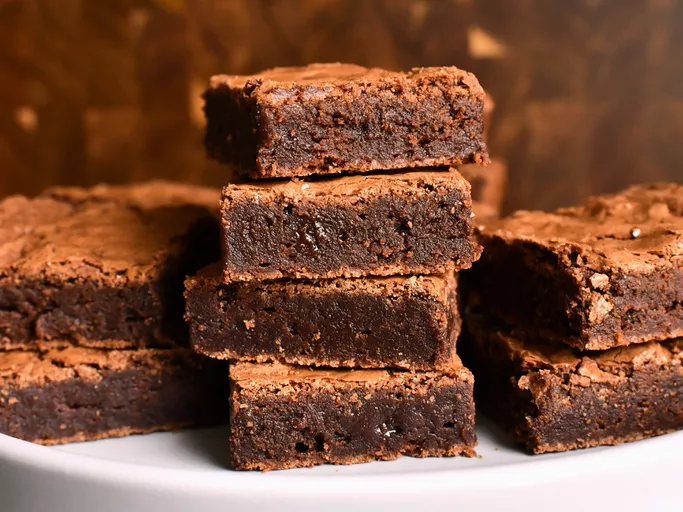

Brownies.

Description
Everybody says their brownies are the best, but these really are the best. They feature the "holy trinity" of brownie perfection-a crispy, flaky top, chewy edges, and a fudgy center. Serve with a glass of ice cold milk.
Ingredients
- ⅔ cup all-purpose flour
- ¾ teaspoon kosher salt
- 3 ounces unsweetened chocolate, chopped
- ½ cup unsalted butter
- 1 ¼ cups white sugar
- 2 large eggs
- 1 teaspoon pure vanilla extract
Steps
- Preheat the oven to 350 degrees F (175 degrees C). Butter an 8-inch square baking dish or pan, then line with parchment paper if desired to make getting the brownies out easier.
- Mix flour and salt together in a bowl; set aside.
- Place chopped chocolate and butter into a heatproof bowl and set over a saucepan with 1 inch of very gently simmering water. When the butter and almost all of the chocolate is melted, stir until smooth. Turn off the heat and set aside.
- Mix sugar and eggs in a mixing bowl with an electric hand mixer until very airy, thick, and creamy, about 5 minutes. Mix in vanilla extract, then slowly drizzle in the melted chocolate mixture, while mixing on high speed.
- Dump in the flour mixture and mix on low speed just until the flour disappears. Use a spatula to transfer the batter into the prepared baking dish and spread as evenly as possible.
- Bake in the center of the preheated oven until a toothpick inserted near the center comes out virtually clean, about 30 minutes. Let cool on a wire rack for 15 minutes. Use a spatula to lightly press down the higher parts of the brownie around the edge of the dish. Let cool to room temperature, 20 to 30 minutes, before removing and cutting into 9 pieces.